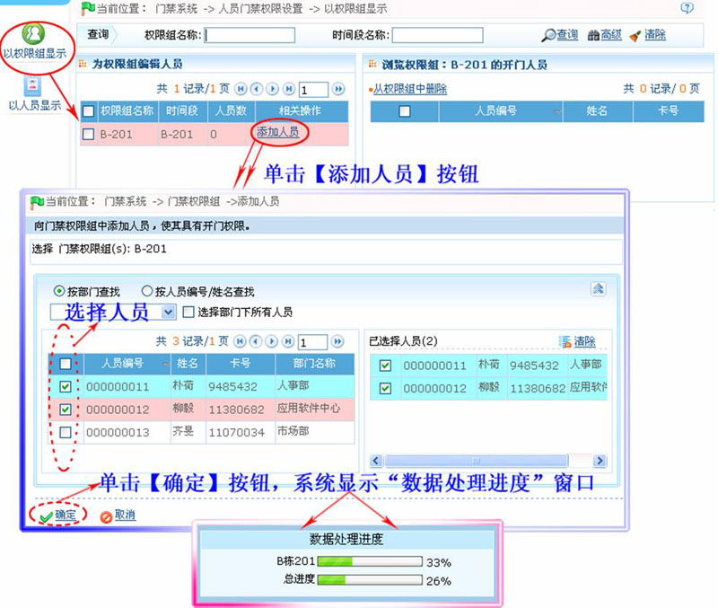
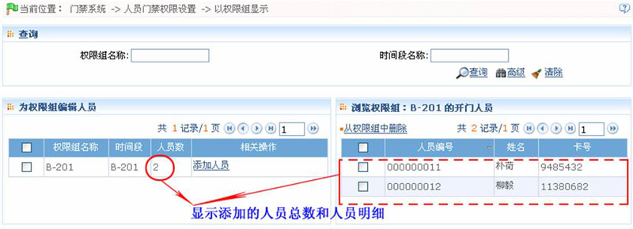
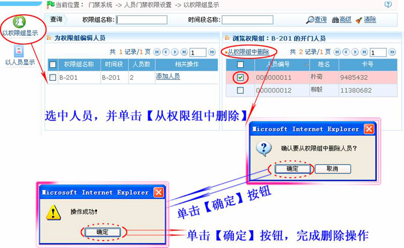
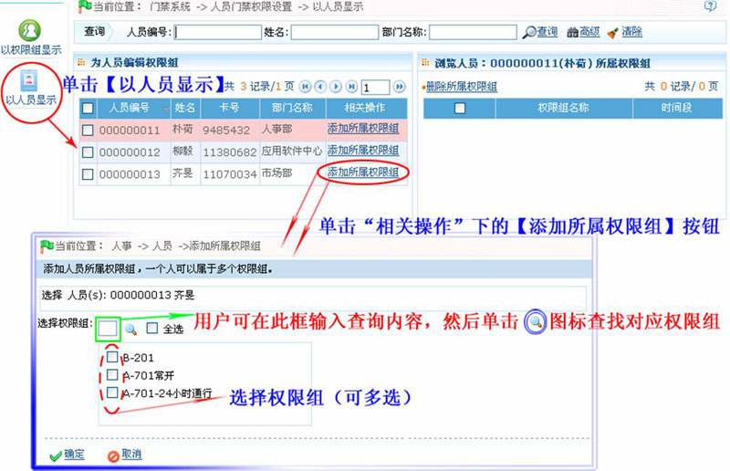
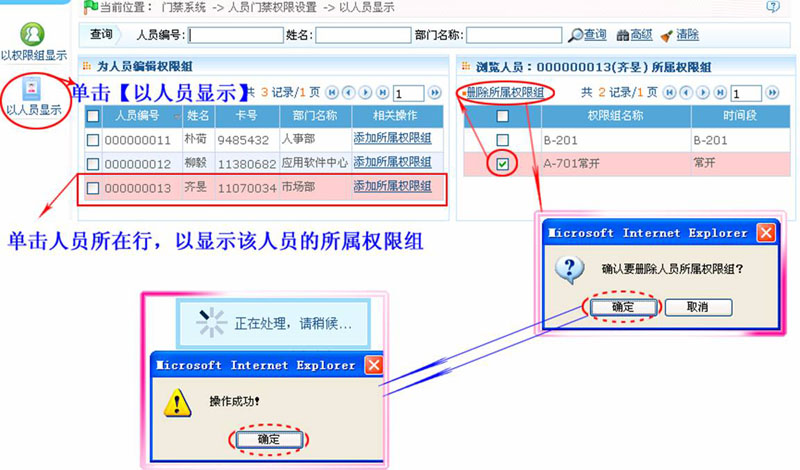

6.5 人员门禁权限设置
为门禁权限组分配可以验证通过的人员，人员门禁权限组为两种显示方式：
以权限组显示：给指定权限组添加/删除开门人员。
以人员显示：将指定人员添加到指定的门禁权限组中，或者将该人员从指定的门禁权限组中删除。
-
 以权限组显示――为权限组添加/删除人员
以权限组显示――为权限组添加/删除人员 -
 为权限组添加人员（向权限组中添加人员，使其具有开门权限）
为权限组添加人员（向权限组中添加人员，使其具有开门权限）
1、单击【门禁】 【人员门禁权限】
【人员门禁权限】 【以权限组显示】，进入“以权限组显示”的人员门禁权限页面。
【以权限组显示】，进入“以权限组显示”的人员门禁权限页面。
2、单击权限组所在行的“相关操作”下的【添加人员】按钮，进入为权限组添加人员页面。
3、选择人员（可多选），然后单击【确定】按钮，系统显示数据处理进度。
具体操作如下：

4、数据处理完成后，自动返回人员门禁权限设置页面，此时页面中，将显示已添加的人员。

 注意：添加人员时，如果选择的人员已经存在于当前门禁权限组中，系统将不会重复添加。
注意：添加人员时，如果选择的人员已经存在于当前门禁权限组中，系统将不会重复添加。
-
为权限组删除人员
1、单击【门禁】 【人员门禁权限】
【人员门禁权限】 【以权限组显示】，进入“以权限组显示”的人员门禁权限页面。
【以权限组显示】，进入“以权限组显示”的人员门禁权限页面。
2、在浏览权限组开门人员列表中，选中人员，然后单击【从权限组中删除】按钮，弹出删除确认框。
3、单击【确定】按钮，确认并删除被选中的人员，成功后弹出“操作成功”提示框。单击【确定】按钮关闭提示框。
具体操作（页面显示）如下：

-
以人员显示――为人员编辑权限组
-
（为人员）添加所属权限组
1、单击【门禁】 【人员门禁权限】
【人员门禁权限】 【以人员显示】，进入“以人员显示”的人员门禁权限页面。
【以人员显示】，进入“以人员显示”的人员门禁权限页面。
2、在为人员编辑权限组列表中，单击人员所在行的“相关操作”下的【添加所属权限组】，进入（为人员）添加所属权限组页面：

3、为该人员选择权限组（可多选）。然后单击【确定】按钮保存。
-
删除所属权限组
1、单击【门禁】 【人员门禁权限】
【人员门禁权限】 【以人员显示】，进入“以人员显示”的人员门禁权限页面。
【以人员显示】，进入“以人员显示”的人员门禁权限页面。
2、在为人员编辑权限组列表中，单击需删除所属权限组的人员所在行，浏览人员所属权限组列表中，将显示该人员的所属权限组。
3、在浏览人员所属权限组列表中，单击选中需删除的权限组，然后单击【删除所属权限组】，弹出删除确认框。
4、单击【确定】按钮，删除权限组。删除成功后，弹出“操作成功”提示框，单击【确定】按钮关闭提示框。
具体操作页面显示如下：
